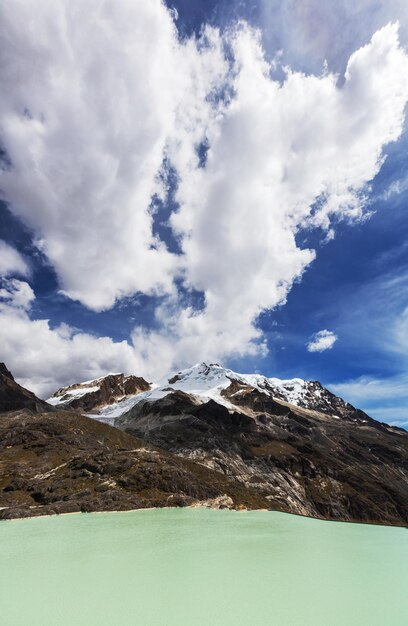

Parque Nacional de Huascaran
1.Parque Nacional de Huascarán

- Ubicación:
Se encuentra en la región Áncash, en la Cordillera Blanca de los Andes peruanos. Su territorio abarca partes de las provincias de Yungay, Carhuaz, Huari y Recuay.
- Área:
Abarca aproximadamente 340,000 hectáreas (3,400 km²), convirtiéndolo en uno de los parques nacionales más grandes del Perú.
- Fundación:
Fue creado el 1 de julio de 1975 para proteger los ecosistemas de alta montaña y la biodiversidad única de esta zona.
2.Características Geográficas y Naturales

- Montaña Huascarán: Es el pico más alto del Perú y la segunda montaña más alta de Sudamérica, con 6,768 metros sobre el nivel del mar.
- Cordillera Blanca: La cadena montañosa más alta tropical del mundo, con numerosos glaciares, lagunas de agua cristalina y picos nevados.
- Glaciares y Lagunas: Destacan lagunas como Llanganuco y la Laguna 69, muy visitadas por su belleza escénica.
3.Biodiversidad

- Flora: Se encuentran bosques de queñual y polylepis, además de especies endémicas de alta montaña adaptadas al frío y a la altitud.
- Fauna: Alberga especies emblemáticas como el cóndor andino, la vicuña, el oso de anteojos (oso andino), el puma, el zorro andino y varias especies de aves y anfibios.
Importancia Cultural y Arqueológica

- En las cercanías del parque existen restos arqueológicos de culturas preincaicas e incaicas.
- El parque forma parte importante de la cosmovisión andina y es un lugar sagrado para las comunidades locales.